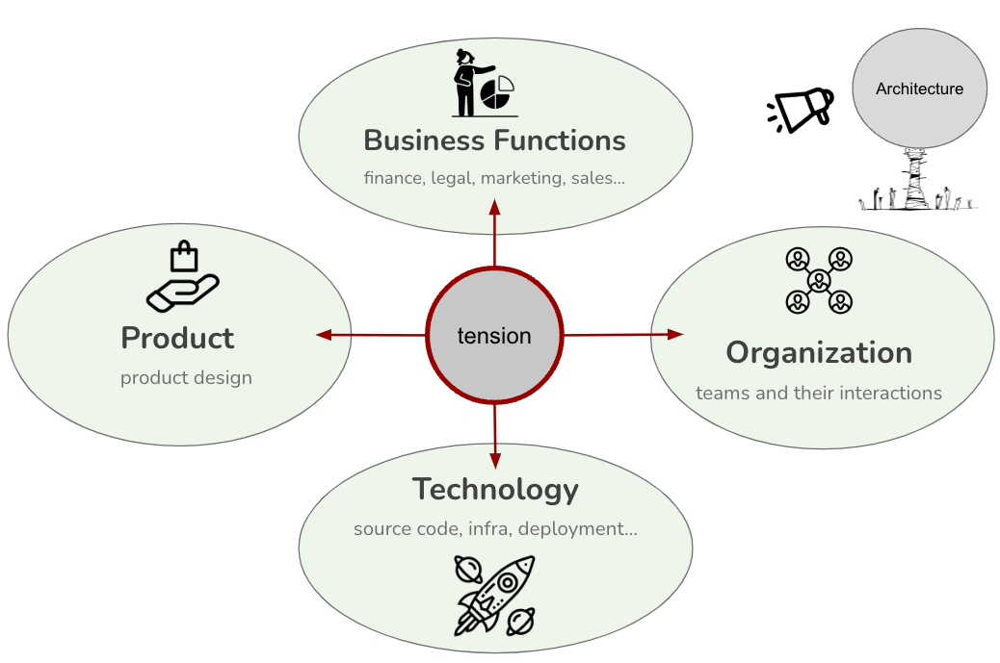

In the Eye of the Storm: Aligning Business, Product, Technology and Organizational Strategies
KEY POINTS:
- I want architecture always to address one of the most challenging problems our organization faces: a tension between technology, product, organization, and business functions.
- While technology, product, organization, and business function face challenges, additional problems occur when there is tension among them.
- Architecture should ensure that conversations happen between the technical, product, organizational, and business functions.
In this section, I elaborate on one type of impact that architect can have in an organization: aligning business, product, technology and organizational strategies.
The Tension
To ensure that organizations maximally benefit from Grounded Architecture, I want architecture always to address one of the most challenging problems our organization faces: a frequent tension between technology, product, organization, and business functions (Figure 1).
While technology, product, organization, and business function face challenges, additional problems occur when there is tension among them. For example, we may organize teams according to a well-defined domain model. Still, if our system is a monolith, our teams will collaborate in a different pattern than domain splits would suggest.
On the other hand, if our teams are well aligned with the technology implementation (e.g., clear ownership of microservices) but the product architecture is different from the microservice domain split, we may end up changing dozens of microservices when we need to introduce relatively simple product features. Similarly, business objectives must be better aligned with product or technology; otherwise, tense interactions will happen (e.g., try reducing short-term costs while adding new features and migrating to the public cloud).
Too frequently, architecture sits on the side, shouting principles and abstract ideals that everyone ignores.
 Figure 1: The tensions between technology, product, organization, and business functions.
The main problem of these tensions is that they slow things down due to miscommunications and misalignment, lead to bad decisions due to lack of information, introduce unnecessary complexity, and lead to many missed opportunities.
The Role of Architecture
Considering this problem, I wanted architecture to actively reduce the tension between technology, product, organization, and business functions. Architecture should ensure that conversations happen between the technical, product, organizational, and business functions.
 Figure 2: Architects should be in the middle of reducing tensions between technology, product, organization, and business functions.
Figure 2: Architects should be in the middle of reducing tensions between technology, product, organization, and business functions.
Getting this product/technology/organizational/business alignment right takes a lot of work, and this is one of the main problems of architecture. It is a “soft” area without explicit external constraints, and we must constantly experiment and change domain boundaries. Numerous acquisitions can worsen such problems, as you have many completely different architectures and technologies stacks built by various people that you may need to combine into one platform. Grounded architecture can help by making this “soft” problem more data-informed.
Legacy structures and monoliths are challenging to change once in place. It can take several years to rebuild a monolith from scratch as a microservices ecosystem. Therefore, a more pragmatic approach is gradually “ strangulating” the monolith by minimizing changes and incrementally extracting pieces into separate microservices. But such an approach takes years. Grounded architecture can provide data about legacy landscapes and connect people to share scarce legacy knowledge to make such changes.
There is always some essential tension between system architecture, team organization, and product organization. Ideally, these structures all change simultaneously and stay in perfect sync. But in practice, these structures change and move at different speeds. For instance, the product may quickly pivot in another direction, but it may take months to reorganize teams to have new product elements as separate domains with clear ownership. It may take several years to reorganize code and services to align microservices well with new team structures. In the meantime, the company may acquire two other companies that need to be integrated with the ecosystems, and the product is already pushing in another direction. Grounded architecture can help by making such changes and gaps more visible.
Guiding Principles ← Architects as Superglue |
Guiding Principles Embrace Diversity, Distribute & Align Decisions → |